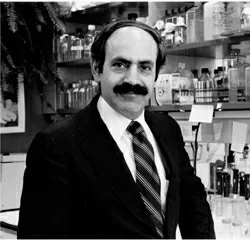

What makes a scientific theory convincing?
Mukherjee begins with the philosopher Karl Popper, who argued that strong scientific theories produce risky predictions. A prediction is risky when it describes something specific that might genuinely turn out to be false. If careful observation confirms it, confidence in the theory increases.
The new theory of cancer genes had just such a prediction. Harold Varmus and Michael Bishop showed that normal cells contained proto-oncogenes and that certain altered versions could cause transformation in viral experiments. If their theory applied to human cancer, then real human cancer cells should contain activated versions of their own growth-control genes.
But at the end of the 1970s, researchers still lacked direct isolation of such a mutated oncogene from an ordinary human tumor. A theory could explain many observations elegantly and still fail when tested against human disease. The next task was to find the actual genetic culprit.
Robert Weinberg wants to escape the shadow of viruses
Robert Weinberg, a cancer biologist at MIT, had trained in laboratories studying viruses and genetic material. He admired the major breakthroughs in his field, but felt that his own research was becoming repetitive. Other scientists had discovered reverse transcriptase and proto-oncogenes; Weinberg still seemed stuck studying viral DNA.
He needed a clear problem that could connect molecular science directly to human cancer. The crucial idea came during a severe Boston snowstorm in February 1978, when Weinberg walked across the Longfellow Bridge toward his laboratory.
Rather than relying on a virus to introduce cancer-causing instructions, why not try transferring DNA directly from a cancer cell into an ordinary cell? If an activated oncogene was present in the cancer DNA, perhaps it would cause the recipient cell to grow abnormally.
Turning an enormous genetic search into a simple test
A human cell contains thousands of genes. Looking at them one by one would be almost impossible with the tools available at the time. But Weinberg realized that an oncogene had a useful defining property: it could cause uncontrolled proliferation in a suitable experimental cell.
Imagine a huge collection of keys. Instead of studying the shape and material of every key, you try them in a lock and watch what happens. Most do nothing; one opens the door. The experiment identifies the interesting key through its function, not merely its appearance.
Weinberg's version involved introducing fragments of cancer-cell DNA into a population of recipient cells and searching for foci—dense clumps of cells that had escaped ordinary growth controls. Successful transformation would reveal that the transferred DNA contained a growth-driving instruction.
How did the DNA transfer work?
The procedure, called transfection, used a chemical method to help cells take up DNA. Weinberg's laboratory could purify DNA from cancer cells, fragment it, and associate it with calcium phosphate particles. Recipient cells could absorb some of those particles along with the DNA.
Then scientists watched the dishes. If a transferred fragment carried the right abnormal instruction, some recipient cells might begin multiplying excessively and form a visible focus.
This was clever because the experiment did not require knowing the oncogene's identity in advance. The abnormal behavior of the cell acted as a signal that something important had been transferred.
The method also had limits: a cell culture is not a full human body, and the recipient cells used in these experiments were more susceptible to transformation than entirely normal human tissue.
Chiaho Shih makes the difficult experiment work
In 1979, graduate student Chiaho Shih performed large numbers of DNA-transfer experiments in Weinberg's laboratory. He began with DNA from mouse cancer cells, testing whether it could cause foci in recipient cells.
The work was repetitive, technically delicate, and required patience. Shih had a careful eye for distinguishing genuinely transformed clumps from ordinary variations in cell growth. He found that DNA from certain tumor cells could indeed transfer transforming activity.
This was an encouraging result, but Weinberg wanted to go further. The greatest scientific prize would be to demonstrate the same result using DNA derived from human cancer cells.
A human cancer sample provides the crucial clue
Shih obtained a cell line originally derived from Earl Jensen, a long-term smoker who had died of bladder cancer. He prepared DNA from these malignant cells and transferred fragments into recipient cells.
The experiment worked: some recipient cells began forming abnormal foci. That meant human tumor DNA could carry an instruction powerful enough to change growth behavior in the experimental system.
The next challenge was identifying the particular piece of DNA responsible. Several other laboratories were pursuing similar discoveries, including groups led by Geoff Cooper, Michael Wigler, and Mariano Barbacid. The race was not simply about being first; independent results could show whether the finding was a general principle rather than a laboratory accident.

The discovery of ras (1982)
In 1982, multiple groups reported the identification of a gene called ras from cancer cells. Ras, like Src, existed in normal cellular biology, where it participated in regulated signaling. In certain cancer cells, it had undergone changes that made its activity abnormal.
A simplified explanation is that normal Ras helps pass growth instructions along a signaling pathway. Its activity can be turned on and off as appropriate. Mutant Ras may remain abnormally active, continuously encouraging downstream processes associated with proliferation.
This fulfilled the risky prediction arising from the proto-oncogene theory: an activated cellular oncogene could be found and isolated from a human cancer. Researchers no longer had to infer the whole story from chicken tumor viruses.
Why ras was a landmark—but not a complete cure
The ras discovery provided a real molecular connection between altered human DNA and cancer-like behavior. It showed that a gene already present in the normal genome could become growth-promoting through mutation.
But knowing the offending gene did not automatically produce a treatment. Ras operated inside complicated signaling systems, and researchers did not yet know how to inhibit its abnormal activity safely in patients.
Mukherjee emphasizes that scientific explanation and clinical application were still separated. Identifying a cause was a necessary step toward rational therapies, but not sufficient by itself. New drugs, delivery methods, trials, and evidence of benefit would be needed.
A revealing awards ceremony (1983)
In 1983, scientist Ray Erikson, associated with discoveries about Src's kinase activity, and leukemia clinician Tom Frei received prestigious recognition at the same event. Both were celebrated for major contributions to cancer research.
Yet Mukherjee describes a strange distance between them. Frei represented progress in treating cancer patients, while Erikson represented progress in understanding cancer's molecular machinery. The fields had much to learn from one another, but their conversations remained largely separate.
This is one of the book's recurring frustrations: the clinician asks which drug can help a patient now; the biologist asks how a cell works. The full potential of cancer medicine requires these questions to meet.
Another prediction: Does the RB tumor suppressor really exist?
The two-hit hypothesis, developed by Alfred Knudson, made a different prediction. In retinoblastoma, cancer cells should have both functional copies of a protective RB gene disabled.
This was harder to investigate than ras. An activated oncogene has an observable effect: transferred into a susceptible cell, it can drive excessive growth. But a missing tumor suppressor does not announce itself so easily. Its importance is revealed by its absence.
Scientists had evidence pointing to chromosome 13 as the location of RB. Yet a chromosome contains many genes. How could they find the one gene whose normal function was missing in retinal tumors?
Thad Dryja looks for what has disappeared
An ophthalmologist-turned-researcher, Thaddeus (Thad) Dryja, developed an ingenious approach. He reasoned that a tumor suppressor could be disabled by different forms of mutation, including deletions—missing pieces of DNA.
Most tumors might have lost different parts of the two RB copies. But very rarely, the same region could be missing from both copies. If such a case were found, that absent region would be a strong clue to the gene's location.
Dryja had an important advantage: as a clinician working near patients with eye disease, he had collected many retinoblastoma tissue samples. He could examine a large number of tumors and look for the rare pattern his reasoning predicted.

A blank signal points toward RB
Dryja tested DNA probes—short labeled sequences that can detect corresponding segments of DNA. Normally, if the targeted segment exists in the sample, the probe produces a detectable signal. If the segment is missing, the result can be blank.
One day, Dryja noticed that a particular probe, called H3-8, failed to detect its target in a tumor sample. The absence of a signal suggested that a segment of chromosome 13 might be missing from both copies in that tumor.
Here the logic is wonderfully inverted. Researchers often find a new gene because they detect something unexpectedly present. Dryja found a possible cancer gene because something expected was missing.
The finding was promising, but he still needed to isolate the full, normal gene and confirm the predicted pattern in other tumors.
Cooperation across laboratories completes the search
Dryja contacted scientists in Weinberg's laboratory, especially Steve Friend. Their approaches were complementary. Dryja had samples of tumors and a clue to missing DNA. Friend had been studying normal DNA, looking for genes that might correspond to what tumors lacked.
Dryja brought his probe to Friend's laboratory. The team used molecular techniques to isolate the corresponding normal DNA sequence, then examined retinoblastoma tumors for damage to that gene.
Their results matched the central prediction: the gene's function was lost in tumor cells through damage affecting both copies. In October 1986, Friend, Weinberg, and Dryja reported the isolation of the RB gene.
The result complemented the ras discovery: scientists had now identified an activated oncogene and a disabled tumor suppressor directly in human cancer research.
What does the RB protein actually do?
RB is not only relevant to an uncommon eye tumor. Its protein is a general regulator of cell-cycle progression. The book describes RB as a protein that can hold other proteins in a restrained state, preventing them from activating cell division at an inappropriate time.
Regulatory changes, including phosphorylation, can release those proteins when the cell is legitimately preparing to divide. In normal physiology, these controls are coordinated and reversible.
If RB function is lost, cells may fail to register important restraints on division. The brake is no longer working correctly. This helps explain why RB pathway abnormalities later appeared in multiple cancers, not merely retinoblastoma.
The name RB came from the disease in which it was identified, but the biology is far broader.
From two genes to a whole catalog of cancer pathways
During the 1980s and early 1990s, researchers identified many more genes associated with human cancer. Growth-promoting genes included myc, neu, fos, ret, and akt; important tumor suppressors included p53, VHL, and APC.
The emerging picture was no longer one hidden universal oncogene. It was a collection of normal control genes and pathways that could be damaged in different combinations.
The core analogy remained useful: activated oncogenes resemble jammed accelerators, while inactivated tumor suppressors resemble missing brakes. But the actual machinery contained many interacting switches, sensors, pathways, and safeguards.
Cancer biology was gradually learning to describe the breakdown in terms of specific molecular components rather than the vague idea that a cell had somehow become bad.
Inherited cancer susceptibility becomes genetically identifiable
The same approach helped researchers understand families in which certain cancers appeared repeatedly across generations. The chapter describes inherited cancer syndromes such as Lynch syndrome, associated with a characteristic range of cancers, and Li-Fraumeni syndrome, associated with another pattern of tumors.
The study of these families suggested that people could inherit defects in genes that protect against cancer. But an inherited predisposition is not the same as an unavoidable diagnosis. Additional genetic changes and biological circumstances often influence whether and when a tumor develops.
The chapter also discusses BRCA1, a gene linked to inherited susceptibility to breast and ovarian cancer, and the work associated with Mary-Claire King and the later identification of the gene by other researchers. It illustrates how rare family patterns can lead to discoveries relevant to wider populations.
A final scientific challenge: Can genes alone produce a real tumor?
The discoveries of ras and RB demonstrated important genetic abnormalities in human cancers. Yet skeptics could still ask whether these genes were sufficient to produce a genuine tumor in a living organism, as opposed to a transformed cell culture.
Mukherjee invokes a version of Koch's criteria, originally used to reason about causes of infectious disease. If a proposed cause is real, one would like to isolate it and show that introducing it in an appropriate setting can reproduce the condition.
Researchers needed an experiment that crossed the boundary between an artificial focus in a petri dish and a living animal with an actual tumor.
Philip Leder creates the OncoMouse
New techniques allowed scientists to insert chosen genes into early mouse embryos, producing transgenic mice whose cells carried engineered genetic alterations. Philip Leder and colleagues used this approach to study cancer-driving genes in mammary tissue.
A mouse engineered to express myc developed tumors, but less uniformly and later than might have been expected. Pregnancy-related biological conditions appeared important. This was a reminder that even a powerful oncogene does not operate independently of the cell's environment and other genetic changes.
Leder then combined ras and myc in another set of mice. Tumors developed more readily. The experimental OncoMouse showed that defined genetic alterations could contribute to real cancer in a living animal.
The surprise: Even two oncogenes were not enough for every cell
The OncoMouse was a dramatic confirmation of cancer genetics, but also an unexpected warning against oversimplification. Millions of engineered cells contained the introduced cancer-promoting genes, yet only a small fraction produced actual tumors.
Why? Cancer requires more than simply giving a cell one growth instruction. Other pathways, tissue conditions, and additional changes can determine whether a cell proceeds toward full malignancy.
This finding prepared the next chapter's question: How many coordinated biological abilities must a cell acquire to become a dangerous cancer?
The chapter's deeper meaning and final takeaway
The chapter follows a remarkable chain of risky predictions and experimental proof:
- A human cancer should contain an activated cellular oncogene: ras is isolated.
- A cancer caused by loss of a protective gene should show damage to both copies: RB is identified.
- Altering defined genes should help generate a real tumor: the OncoMouse provides direct experimental evidence.
The science moves from suspected mechanisms to identifiable DNA sequences, then to biological effects in living animals. Yet the results also show why a single gene is not a complete theory of the disease.
Most important message: Cancer is driven by genetic alterations, but its development depends on combinations of changes and biological context. By the end of this chapter, researchers have strong evidence for the genetic foundation of cancer and a new question about what turns an altered cell into a fully malignant one.